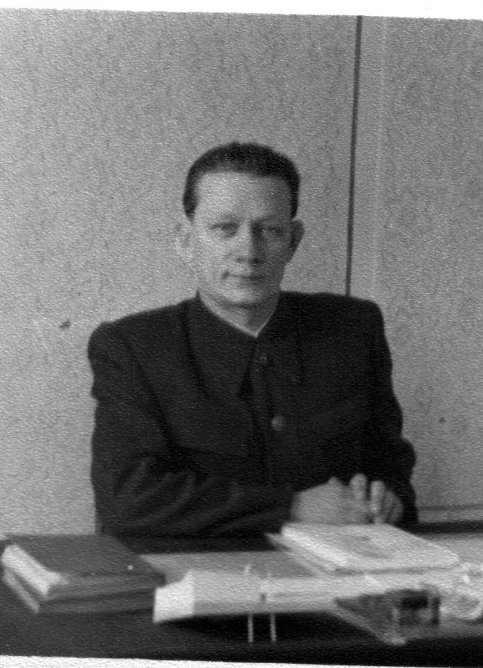

Голубков
Сергей Александрович
Сергей Александрович
Дата рождения: 1907
Сергей Александрович родился в 1907 году в г. Острогожск РСФСР Национальность: Русский До войны работал педагогом в г. Мичуринск Военная биография: был ранен, попал в плен, совершил побег. Был в партизанском отряде Рогачевской военно-оперативной группы (Белоруссия) политрук отряда Биография после войны: Директор института усовершенствование учителей г.Пинск, директор средней школы №1 г. Столин. В 50 –х годах в школах началось создание ученических производственных бригад. Такая бригада была создана и в школе г. Столина, она работала на полях подшефного колхоза имени Ленина (деревня Бережное). Ребята кукурузу, картофель, выращивали свеклу. Возле школы выросла теплица, а большой сад стал украшением школы. Инициатором был директор школы Голубков Сергей Александрович. Сергей Александрович свои воспоминания о пребывании в концлагере воплотил в повести "В Фашистском Концлагере". Вот короткий отрывок из неё: В ФАШИСТСКОМ КОНЦЛАГЕРЕ Главы из повести "В концлагере" Сначала мы не знали, куда нас завезли. Кругом было много людей. Все в советской форме, но без знаков различия и до невозможности грузные. Шинели у многих разорваны, без хлястиков, гимнастёрки тоже грязные, в крови, поясов ни у кого нет. Некоторые находились в нижнем, но окровавленном белье. Лица большинства, окружающих заросли щетиной, многие были без пилоток и вообще без головных уборов. Большинство из присутствующих были перевязаны пропитанными кровью бинтами. Обмундирование тоже было в крови, мало того, что пропитано кровью, но еще все засохло, как-то заскорузло. Руки у многих грязные, как видно, давно не мытые. И что сразу бросилось в глаза: почти у всех просящие, какие-то испуганные, жалостливые взгляды, как будто все они в чем-то страшно виноваты. В воздухе стоял больничный запах, но пахло не лекарством, а трупным разложением. Во рту ощущался сладковато-тошнотворный едкий привкус. Это и был как раз тот концентрационный лагерь для военнопленных, куда нас обещали доставить. Лагерь был создан немцами на западной окраине города Рославля Смоленской области. Он был расположен, если ехать по Варшавскому тракту с запада, не доезжая города, сразу же около шоссейной дороги, с правой стороны. До войны здесь располагалась школа для младших командиров пограничных войск Наркомата внутренних дел. Для школы было построено два больших двухэтажных здания из серого кирпича. Рядом была оборудована кухня, тоже из такого серого кирпича. Вокруг кирпичных зданий стояли деревянные постройки, где находились различные склады: вещевые, продовольственные и даже оружейные. Несколько складских зданий сделаны тоже из серого кирпича. Два сарая были особенно велики, примерно по 35 метров длиной и шириной до 25 метров. Что-что, а концлагеря фашисты строили крепко, надежно, с большим искусством. Сразу чувствовалась их опытность в этом деле. Весь лагерь обнесен большой изгородью из колючей проволоки, высота которой доходила до трех метров. Проволока переплеталась так часто, что пролезть через нее было нельзя. Колючей проволоки для концлагерей немцы не жалели. Через три метра от первой проволочной изгороди шла вторая такая же изгородь. А расстояние между ними переплеталось тоже проволокой в виде паутинки. Если даже кто, вздумав бежать, и преодолел бы первый ряд изгороди (что исключалось вообще), уж «паутинку» и второй ряд изгороди преодолеть совсем не представлялось возможным. Во главе лагеря стоял фашистский офицер. Отдельные службы тоже управлялись офицерами из фашистов, но внутреннее управле¬ние передавалось лагерной полиции. Через полицию немцы и осуществляли полное руководство лагерной жизнью. В полицию фашисты подбирали, главным образом, людей, зарекомендовавших себя чем-либо в борьбе против Советской власти. Сюда шел большей частью деклассированный элемент. На вооружении полицейские имели пистолеты, специальные плетки или особые дубинки. Правда, огнестрельное оружие фашисты доверяли не всем полицейским, но и дубинка в руках изуверствующего выродка являлась тяжелым и грозным оружием. У начальника лагерной полиции на поясе в кобуре всегда был пистолет. Начальник лагерной полиции имел большие права, и ему фашистские власти оказывали особое доверие. И вот сюда-то, в такой лагерь, попали и мы. Правда, тогда, в августе 1941 года, лагерь не был еще так укреплен, как об этом сказано выше. Тогда здесь под лагерь была отведена сравнительно небольшая территория, хотя и густо опутанная проволокой и охраняемая снаружи немцами. Не было тогда и полицейских, они появились несколько позже. Проще было и управление внутри лагеря, если не сказать, что управления вообще сначала не имелось, так как лагерем ведали фронтовые части, а им было не до управле¬ния. Согнав в одно место большое количество пленных, фронтовые части держали собранных, как скот, не любопытствуя, что и как происходит там, внутри самого лагеря. Когда немцы сняли нас с машины и уехали, мы остались в кругу своих. Сразу же нас обступили со всех сторон. Посыпались вопросы: «Кто?», «Откуда?», «Когда попали в плен?», «Где ранены?», «Какое у вас воинское звание?» и многие другие. Мы не управлялись отвечать. Кроме того, многие стали обращаться с просьбами: кто просит табачку на закруточку, кто — хоть маленький кусочек хлеба, кто — бумажки на цыгарку и т. п. Удовлетворить все просьбы, естественно, мы не могли. Тут-то я и вспомнил про белогвардейские газеты, и, вероятно, впервые за все время существования этих газет они сыграли более или менее полезную роль. Я достал их, разорвал на мелкие части и раздал по кусочку товарищам по несчастью. В несколько минут га зеты расхватали. Я искренне пожалел, что бумаги оказалось мало. Бумага нужна была многим. От расспросов и просьб я не знал, куда деваться. Видя мое беспомощное состояние, русский пленный врач Федоров пришел мне на помощь. Он просто приказал санитарам, тоже из пленных, положить меня на носилки и отнести в палату; №4, на второй этаж здания №2. Градского отнесли туда же немного раньше меня. Оказалось, что здесь, в концлагере, пленные русские врачи организовали госпиталь для раненых и больных. Они пришли на помощь своим товарищам, находящимся в еще худшем состоянии. Госпиталь, или лазарет, как его часто называли, размещался в обоих двух этажных зданиях или корпусах, где раньше жили курсанты погран-школы. Никто из немцев, как я узнал впоследствии, не собирался организовывать госпиталь для пленных. Это сами пленные врачи проявили свою инициативу. Кроме восьми палат в двух зданиях-корпусах находилось несколько служебных комнат. Оба здания-корпуса однотипные, в них одинаковые и условия, одинаково они и использовались. По одной маленькой комнате в каждом здании отводилось для аптеки. Впрочем, лекарств в них никогда не было. Обычно в аптеку все, кто имел, отдавали бинты, а потом здесь же стирали использованные и опять пускали их в употребление. По одной комнате занимали врачи, фельдшеры, а впоследствии лучшие комнаты заняла лазаретная полиция (но это потом, несколько позже). Кроме того, на каждый кор¬пус полагались санитары, рабочие. Подбирали такой персонал плен¬ные врачи по своему усмотрению, и жили санитары и рабочие где придется, часто даже в палате вместе с ранеными. В палате мы снова были подвергнуты всевозможным вопросам и расспросам, но уже «сидячих» и «лежачих» раненых, которые по состоянию своего здоровья не могли спускаться вниз, но тоже хотели знать, что и как делается на фронтах. Пока лагерь еще не был оборудован и укреплен, убежать из него не представляло труда. Достаточно подойти к изгороди, а изгородь была еще в один ряд, дождаться, когда часовой немного отойдет, перелезть через проволоку, затеряться среди гражданского населения, и дело сделано. Гражданского населения около лагеря, особенно в первые месяцы, толпилось много. Так многие и уходили из лагеря. Я не говорю, что убегали, так как побег по существу не походил на побег. И многие не терялись. Но я был ранен. Первые месяцы я не мог ходить без костылей. Сама по себе рана нетяжелая, но задета берцовая кость и при ходьбе напряжение мышц вызывало страшные боли. То, что я убегу из лагеря, не вызывало у меня сомнения. В этом я твердо был уверен. Мысль о побеге ни на одну минуту не оставляла меня. Вопрос был только во времени. Надо подлечить раны, подобрать группу товарищей и идти в леса, партизанить, помогать бить врага и на оккупированной фашистами земле. Вот к чему устремились теперь все мои помыслы. Но для этого нужно было время… .